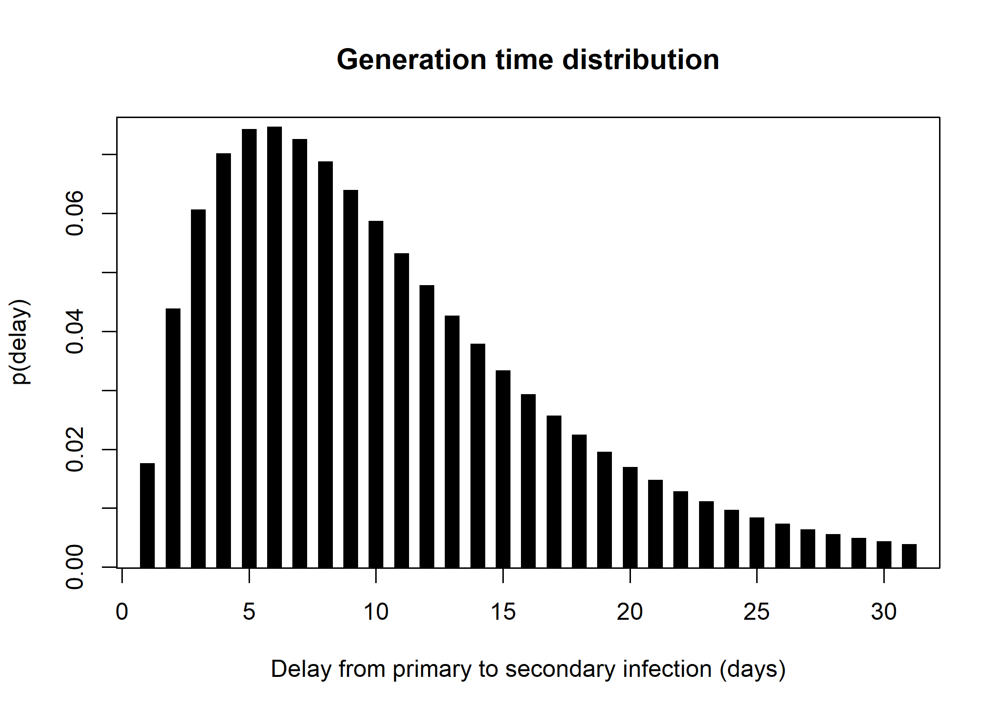

This package is under development. Do not use it without contacting the authors first.
Installing the package
To install the development version of the package, type:
pak::pkg_install("thibautjombart/simulacr")Note that this requires the package pak to be installed.
What does it do?
simulacr implements outbreak simulation using contact-driven branching processes. The main features of the package include:
simulate_outbreak(): the main function, simulating epidemic spread using inputs on the generation time distribution, individual transmission rates, and contact matrices; it outputs asimulacrobject, which is a list containing a linelist and a transmission tree, which can be converted toepicontactsobjects for visualisation, and plotted usingplot(...)simulate_outbreak_step(): the step-wise version of the simulator, designed for calling from other packagesmake_pmf_delay(): to generate probability mass functions of delays distributionsmake_disc_gamma(): to build discretised Gamma distributions for delay distributionsmake_panmictic_contacts(): to generate a contact matrix assuming random mixingdraw_labels(): wrapper function to generate random alphanumeric labels
Worked example
This brief example illustrates how we can simulate an outbreak.
library(simulacr)
## make a generation time distribution
gen_time <- make_pmf_delay(make_disc_gamma(10, 7))
plot(
gen_time(0:30), type = "h", lend = 2, lwd = 10,
main = "Generation time distribution",
xlab = "Delay from primary to secondary infection (days)",
ylab = "p(delay)"
)
## simulate an outbreak using random mixing
## (no contacts matrix provided -> all individuals are in contact by default)
set.seed(1)
res <- simulate_outbreak(
n = 100, # 100 individuals in the population
duration = 365, # simulate for a year
w = gen_time, # generation time distribution
tau = runif(100, 0.01, 0.05) # individual transmission rates, from 0.01 to 0.05
)
names(res)
#> [1] "linelist" "tree"
res
#> $linelist
#> # A tibble: 100 × 3
#> id casedef date_infection
#> <chr> <chr> <dbl>
#> 1 eLGzdD case 1
#> 2 8Tvbyj case 44
#> 3 MQ90i6 case 45
#> 4 RdzUUA case 43
#> 5 kSVCEa case 30
#> 6 Z42dvb case 46
#> 7 YWzVgb case 40
#> 8 EGjSAk case 51
#> 9 6rcYKS case 34
#> 10 VBW4HD case 33
#> # ℹ 90 more rows
#>
#> $tree
#> # A tibble: 91 × 3
#> from to date
#> <chr> <chr> <dbl>
#> 1 <NA> eLGzdD 1
#> 2 eLGzdD LjuhEd 14
#> 3 LjuhEd HmhA3k 18
#> 4 LjuhEd J98DE8 23
#> 5 HmhA3k Lwe2aP 23
#> 6 LjuhEd MOZ5Ca 23
#> 7 HmhA3k yKVg67 25
#> 8 J98DE8 knhTUJ 25
#> 9 MOZ5Ca 3eZzb4 25
#> 10 HmhA3k UwrMJp 26
#> # ℹ 81 more rows
#>
#> attr(,"class")
#> [1] "simulacr" "list"
plot(res)
Note: for the interactive version of this plot, check the simulacr website.
Resources
Getting help online
Bug reports and feature requests should be posted on github using the issue system.
Contributions are welcome via pull requests.
Please note that this project is released with a Contributor Code of Conduct. By participating in this project you agree to abide by its terms.